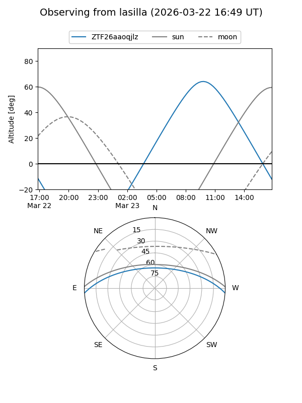
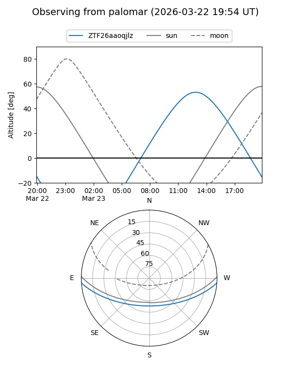

ZTF26aaoqjlz
Target ZTF26aaoqjlz at 2026-03-22 14:16
Aliases and brokers:
FINK: link
Lasair: link
ALeRCE: link
alt names
ZTF26aaoqjlz (ztf,fink_ztf)
Coordinates:
equatorial (ra, dec) = 256.6675,-3.40423
equatorial (HMS+DMS) = 17:06:40.19,-03:24:15.24
galactic (l, b) = (17.1149,+21.41091)
Flags:
Photometry:
last ztfg=19.63
1 ztfg detections
Lightcurve
Visibility


Additional plots